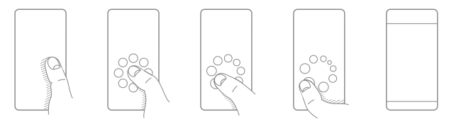
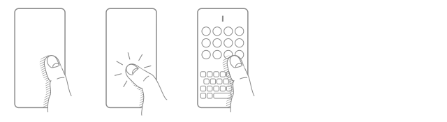
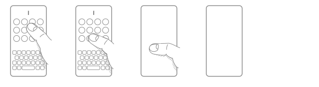
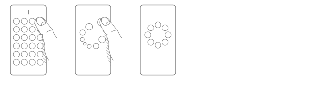

Voy a cambiar durante un tiempo de lanzador de aplicaciones en mis dispositivos Android. En este caso voy a utilizar PieLauncher, un lanzador que utiliza un dinámico en menú circular lugar de tablas de iconos, menú de texto, etc...
Promete que una vez que te acostumbras, puedes iniciar las aplicaciones que usas con más frecuencia utilizando la memoria muscular sin siquiera mirar la pantalla.
Pulsando en cualquier parte de la pantalla, se abre el circulo de aplicaciones para que las selecciones. De esta manera, dará igual que utilices la mano derecha, izquierda, etc...
Las aplicaciones que no utilizas con regularidad, están también disponibles rápidamente con solo un toque en cualquier parte de la pantalla y escribiendo la primera o dos letras del nombre de la aplicación.
Como una imágen vale más que mil palabras, te animo a ver el siguiente video.
Mantén pulsado para abrir el menú circular. Luego, desliza para elegir una aplicación.

Simplemente pulsa un toque para abrir la lista. Luego, escribe el nombre de la aplicación que deseas iniciar. Por lo general, una o dos letras son suficientes, incluso si escribes mal una letra. Si la aplicación en la parte superior izquierda es la que desea, también puede presionar para iniciarla.

Desliza hacia abajo para cerrar la lista de aplicaciones.

Manté presionada una aplicación en la lista de aplicaciones para ingresar al editor del menú circular. Utiliza 4, 6 u 8 iconos en el menú circular para aprovecharlo al máximo.

Publicado por Angel el Saturday 27 March del 2021
También te puede interesar:
Powered by org-bash-blog
Written in OrgMode with Emacs and converted to HTML with Pandoc

Este obra está bajo una licencia de Creative Commons Reconocimiento-NoComercial-CompartirIgual 4.0 Internacional.